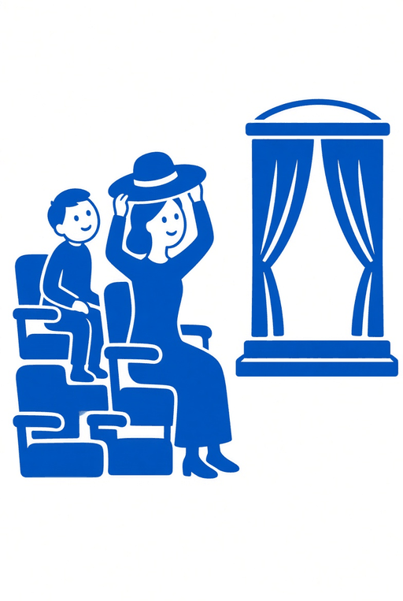
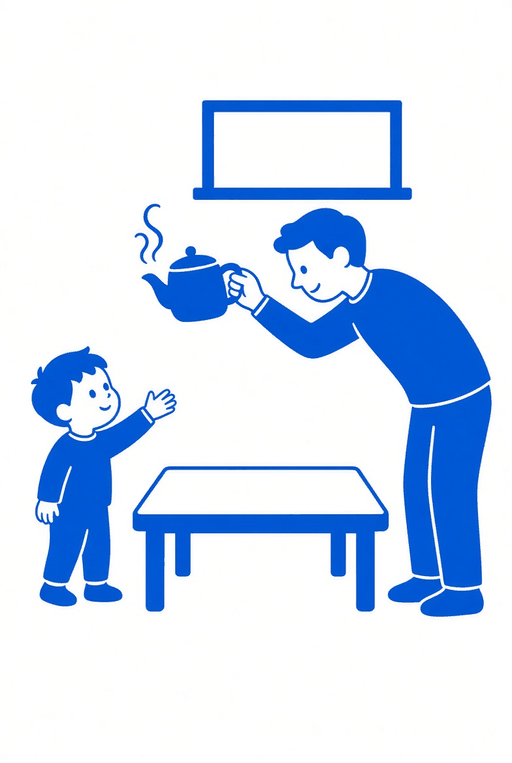

rekening houden met
to allow for, to take into account
drawnin the game
- Scene
- a person in short sleeves stands beside a bicycle on its stand, under a round sun with short rays. Their head is turned up and back toward one small solid cloud in the far upper corner. Both hands push a folded hooded raincoat into an open bag that hangs from the handlebars. No rain falls anywhere. The raincoat going into the bag under the far cloud is the clearest mark.
- Must read
- allowing for something in advance, possible rain.
- Avoid
- rain falling or the raincoat being worn (reads as last hebben van regen or beschermen tegen); an open umbrella; the sky filled with cloud, or no sun (the rain must be only possible); a suitcase, a house or a neighbour with keys (that is rekenen op, the theme partner); a calendar, a phone forecast or a weather symbol on a screen.
- Pair / note
- Theme partner of rekenen-op-vriend only; the verb is no longer shared, so no shared camera. The old scene asked for a grey cloud, which one flat cobalt cannot give; the cloud is now small, solid and far off, with the sun over the person, so 'not yet' is visible. The id should become rekening-houden-met-regen, as the page already says.
- Example
- Ik hou rekening met regen.
I allow for rain. - Build
- Ik hou rekening met regen
- Build
- Zij houdt rekening met regen
- Check question
- Regent het nu? Nee
- Alt text
- Iemand in korte mouwen stopt onder een stralende zon een regenjas in een fietstas en kijkt om naar één kleine wolk in de verte.
rekenen-met-regen.png · rij 2 · herkomst Docs/prepositions-art-a2-pairs.md:115 (git)

rekening houden met
to allow for, to take into account
drawnin the game
- Scene
- two rows of plain seats seen from the side, both facing a small stage on the right with a closed plain curtain. In the front row a woman lifts a large wide hat off her head with both hands, her head turned back over the shoulder. Directly behind her a small child sits on the edge of the seat, neck stretched and head leaning sideways to see past her. The hat being lifted off and the glance back at the child are the clearest marks.
- Must read
- changing what you do so it does not trouble someone else.
- Avoid
- the hat handed to the child (geven aan); the woman moving to another seat; actors or a lit stage; a cinema screen with a picture (the zich inleven in card); the woman putting the hat on; writing or numbers on the seats.
- Pair / note
- rekening houden met says you let someone's needs shape what you do; letten op would only be watching them.
- Example
- Zij houdt rekening met het kind achter haar.
She is considerate of the child behind her. - Build
- Zij houdt rekening met het kind achter haar
- Build
- Hij houdt rekening met het kind achter hem
- Check question
- Zet de vrouw haar hoed op? Nee
- Alt text
- In een zaal zet een vrouw haar grote hoed af en kijkt om naar het kleine kind dat achter haar zit.
rekening-houden-met-het-kind-achter-haar.png · nieuw
rekening houden met
to allow for, to take into account
drawnin the game
- Scene
- a round café table on a terrace with two cups on it and three chairs around it. A young woman stands holding one of the chairs up off the ground with both hands, carrying it away from the table to leave a gap, her face turned to a man in a wheelchair who rolls towards that gap, both hands on his wheels, smiling. A third person sits at the table. The chair lifted away and the wheelchair rolling into the gap are the clearest marks.
- Must read
- making room for someone's needs before they ask.
- Avoid
- the woman pushing the wheelchair (helpen); a steep ramp (the zich verplaatsen in card); the man being lifted; a waiter with a tray; a sign or a menu board with writing.
- Pair / note
- rekening houden met is about planning around a person's needs; helpen would show her hands on the wheelchair.
- Example
- Zij houdt rekening met haar vriend in de rolstoel.
She takes her friend in the wheelchair into account. - Build
- Zij houdt rekening met haar vriend in de rolstoel
- Build
- Wij houden rekening met onze vriend in de rolstoel
- Check question
- Duwt de vrouw de rolstoel? Nee
- Alt text
- Op een terras tilt een vrouw een stoel weg bij een ronde tafel zodat een man in een rolstoel kan aanschuiven.
rekening-houden-met-de-rolstoel.png · nieuw

rekening houden met
to allow for, to take into account
drawnin the game
- Scene
- a living room with a low coffee table and a tall plain shelf on the wall above it. A toddler stands at the table edge, one hand stretched up over the edge. A father stands bent over the table, lifting a large teapot with three curls of steam up and away with one hand, towards the high shelf, his eyes on the toddler. The table top is now empty. The steaming teapot going up to the high shelf over the reaching hand is the clearest mark.
- Must read
- putting something out of reach because of who is in the room.
- Avoid
- the father pouring tea; a finger raised in warning or a cross face (boos op); the father picking the child up or holding its hand (passen op, letten op); a cup spilling or the child crying; a second adult on a sofa.
- Pair / note
- rekening houden met says you let what might happen shape what you do; letten op would only be watching the child.
- Example
- Hij houdt rekening met zijn kleine kind.
He takes his small child into account. - Build
- Hij houdt rekening met zijn kleine kind
- Build
- Zij houdt rekening met haar kleine kind
- Check question
- Staat de theepot nog op de tafel? Nee
- Alt text
- Een vader tilt een hete theepot van een lage tafel naar een hoge plank, want zijn kleine kind steekt een hand naar de tafel uit.
rekening-houden-met-het-kleine-kind.png · nieuw